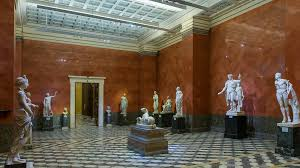
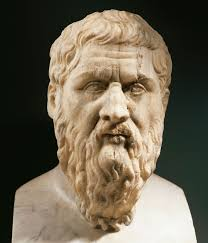

Glass and Glory: The Story of the Crystal Palace

Step inside the story of the Crystal Palace, the iconic glass and iron structure originally built for the Great Exhibition of 1851. Though it tragically burned down in 1936, our museum brings its legacy back to life through a captivating exhibition. Visitors can explore detailed models, rare photographs, and interactive displays that showcase the grandeur of the palace and the remarkable achievements of the exhibits it once housed. From pioneering technology and art to cultural artifacts from around the world, this exhibition celebrates the innovation and creativity of the 19th century while honoring the memory of a lost architectural marvel.
Victoria and Abdul

Discover the fascinating and unlikely friendship between Queen Victoria and her Indian servant Abdul Karim at the World of History Museum. This exhibition explores the remarkable story of loyalty, cultural exchange, and mutual respect that developed late in Victoria’s life. Visitors can view original letters, personal artifacts, and portraits that reveal the bond between monarch and servant, as well as the social and political challenges they faced. Through immersive displays and storytelling, the exhibition offers a unique glimpse into Victorian society, the complexities of empire, and a personal side of the Queen rarely seen in history books.
Life of the Dead

Step into the fascinating world of ancient Egyptian funerary practices with our Mummification Process exhibit. Visitors can learn about the intricate methods used to preserve bodies for the afterlife, see real artifacts such as canopic jars and embalming tools, and explore the beliefs that guided these rituals. Interactive displays let guests try hands-on activities, making this a truly immersive experience that brings ancient Egypt to life.
Historical architecture: The pyramids

Discover the engineering marvels of ancient Egypt in our How Pyramids Were Built exhibit. From the enormous limestone blocks to the ingenious construction techniques, this exhibit reveals how the ancient Egyptians created some of the world’s most enduring monuments. Visitors can explore scale models, watch demonstrations of building methods, and gain insight into the planning, labor, and innovation that made the pyramids possible.
Tudors-Life and Death of Elizabeth

Step back in time and explore the fascinating world of the Tudors at the World of History Museum. Our Tudor exhibit brings history to life with authentic artifacts, detailed costumes, and immersive reconstructions of daily life in the 16th century. Visitors can wander through a recreated Tudor household, view rare manuscripts and weaponry, and experience interactive displays that showcase everything from courtly life to commoners’ trades. Perfect for families, students, and history enthusiasts, the exhibit also offers guided tours, educational workshops, and hands-on activities that make learning about Tudor history both engaging and memorable.

Beyond Henry
Discover the formative years of Henry VIII, one of England’s most famous monarchs, at the World of History Museum. This exhibit explores his childhood as the second son of Henry VII, his education in languages, music, and martial skills, and his early interests in hunting and courtly life. Visitors will learn about the influences that shaped his character and ambitions before he became king, including his relationships with family, tutors, and advisors. Through authentic artifacts, portraits, and interactive displays, this exhibit provides a fascinating insight into the young prince who would grow into a legendary — and often controversial — ruler of England.
Romans
Experience the grandeur of the Roman Empire in our Roman Exhibit. Featuring authentic artifacts, statues, and mosaics, this section showcases Roman daily life, architecture, and military achievements. Visitors can explore interactive displays of Roman cities, see examples of clothing and tools, and learn how the empire influenced law, culture, and technology throughout Europe.
Enemies of Rome

Explore the epic battles and rivalries of ancient Rome in the Enemies of Rome special exhibit. This section highlights the civilizations and peoples who challenged Roman dominance, including the Carthaginians, Gauls, and Germanic tribes. Visitors can see weaponry, battle maps, and dramatic storytelling displays that bring these conflicts vividly to life.
Greeks

Step into the world of ancient Greece in our Greek Exhibit. From city-states like Athens and Sparta to daily life, art, and culture, visitors will see pottery, sculptures, and artifacts that reveal the richness of Greek civilization. Interactive displays allow guests to experience Greek myths, theatre, and athletic competitions, offering a hands-on approach to understanding this influential culture.
The Great Minds of Greece
Explore the ideas that shaped Western thought in our Greek Philosophers exhibit. Visitors can learn about great thinkers such as Plato, Aristotle, and Socrates, discovering their teachings on ethics, politics, and science. Original texts, replicas, and interactive demonstrations show how these philosophers’ ideas influenced philosophy, governance, and education for centuries.